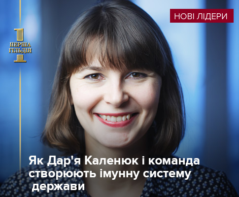

Право бути слабким
Ми довгий час вважали, що те саме "громадянське суспільство", яке виходило на Майдан і йшло на фронт, люди, здатні писати закони, платити податки – новий мейнстрім, а виявилося, що вони співвідносяться з рештою країни тою ж мірою, якою локомотив співвідноситься з вагонами. Він дає вектор, але саме вони визначають інерцію. (рос.)
Слон у посудній лавці. Як держава стала такою великою на банківському ринку
ЕП вирішила проілюструвати, як росла роль держави в банківській системі протягом 2014-2016 років.
27 СІЧНЯ 2017, 15:14 — РОМАН КИРИЧЕНКО, МАРГАРИТА ОРМОЦАДЗЕ, ДЛЯ ЕП
Інвестори проти України: хто кого? Бувальщина про землю київську
Офшорна компанія зажадала від України компенсувати їй 120 млн дол за те, що суди і прокуратура часів Януковича позбавили її ділянки в центрі Києва. Держава виграє суперечку, якщо доведе наявність "схем". (рос.)
27 СІЧНЯ 2017, 12:11
Перший тиждень Трампа. Хто і за що отримав запрошення до його команди
Перед США вже незабаром може постати серйозний зовнішній виклик: торгова війна з Китаєм або нова військова авантюра Кремля. Хто ж тоді ухвалюватиме рішення?
31 СІЧНЯ 2017, 13:13 — ЮЛІЯ КУРНИШОВА, ДЛЯ ЄП
Друга хвиля. FAQ для нових е-декларантів: що і як декларувати?
Як правильно подати е-декларацію? Що і як треба декларувати, хто вважається членом родини, пороги декларування-2017, а також яка відповідальність за порушення вимог фінансового контролю.
31 СІЧНЯ 2017, 11:24 — ДМИТРО КОТЛЯР
Податкова міліція або фінансова поліція? Ставки – 3 до 1
Законопроект про створення нового органу на заміну "репресивної" податкової міліції Кабмін розгляне 1 лютого. Чи є шанси, що бізнес з нею попрощається?
31 СІЧНЯ 2017, 10:44 — ГАЛИНА КАЛАЧОВА
Телефонна атака: Україну накрила хвиля кібершахрайства
Довірливих і недосвідчених українців все частіше обкрадають через телефони і сайти. Рахунок іде на мільйони гривень. Зупинити хвилю кібершахрайства взялися депутати за допомогою нового закону. (рос.)
30 СІЧНЯ 2017, 14:58 — ВСЕВОЛОД НЕКРАСОВ, ЕП
Віталій Манський: Я вважаю, що зараз не час для примирення
Віталій Манський останнім часом часто приїжджає до України. Країна, в якій він народився і провів дитинство, стала для нього тепер, через десятиліття, майданчиком для пошуків власної ідентичності. УП.Культура поговорила з режисером. (рос.)
30 СІЧНЯ 2017,14:14 — КАТЕРИНА СЕРГАЦКОВА
Ціна траншу. Уряд відмовляється від підтримки експорту
Урядовців не бентежить той факт, що потенційне зобов'язання України перед МВФ протирічить Закону про Експортно-кредитне агентство як в частині строків його створення, так і в частині видів діяльності установи.
Європейський захист від кіберсквотера. Де пасе задніх Україна
В Україні, перш ніж розпочати судовий доменний спір, варто бути готовим до низки складнощів. Чи можна модернізувати цю систему? Звичайно, можна, взявши за взірець європейський досвід, зокрема позасудову практику вирішення таких суперечок.
Як трудоголікам знайти час на читання книжок?
Якщо ви користуєтеся громадським транспортом, то вже чудово знаєте, як добре там читати. В цю ж комірку записуємо й чекання в чергах.
Мовний менеджмент по-українськи
Основна відмінність мовного менеджмента від мовної політики полягає в тому, що йдеться не про нав’язування певного плану дій у мовній сфері зверху, від держави, а про постійну боротьбу за владу, битву інтересів, враховування громадських ініціатив.
ПОПУЛЯРНІ
ВИБІР РЕДАКТОРА ЗА КОМЕНТАРЯМИ В СОЦМЕРЕЖАХ ЗА ПЕРЕГЛЯДАМИ1
Порошенко перервав візит до Німеччини через Авдіївку
44348
2
ЗМІ: Башар Асад перебуває в критичному стані
38181
3
Авдіївка: Бойовики спробували наступати. Атаку відбили, ліквідували "Консула"
34245
4
У понеділок під Авдіївкою вже є загиблі і поранені
25291
5
Меркель: На Донбасі знову гинуть солдати, порушується режим "тиші"
18019